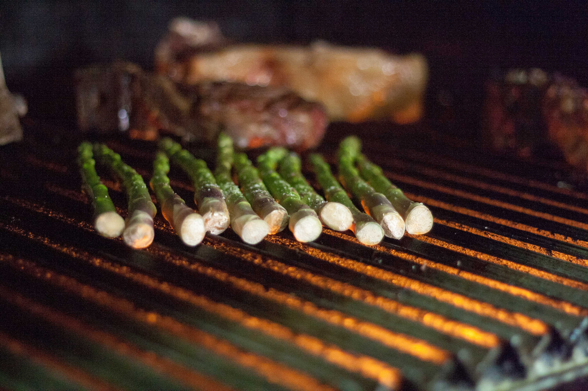
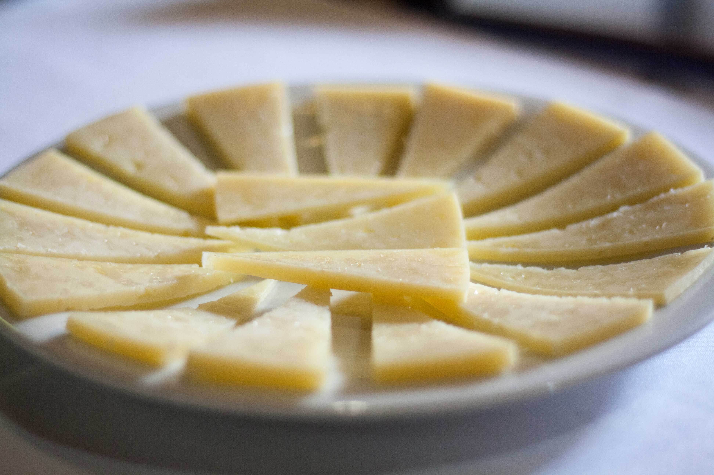
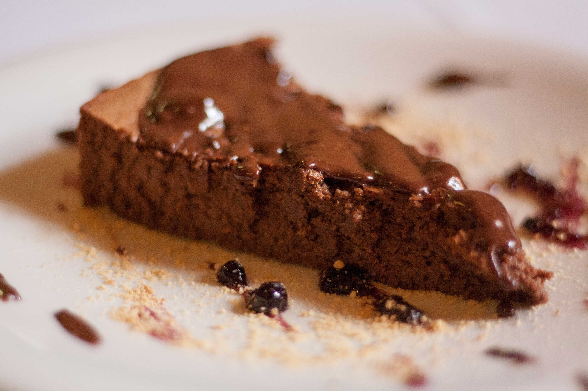

ARAGUANEY
ㅤ
- Comer, en sentido amplio, tomar alimentos por la boca.
- Nosotros nos ganamos la vida dando de comer. La comida
- que ofrecemos está fundamentada en las carnes de vacuno
- asadas a la parrilla. El combustible, (troncos de encina seca
- procedente de las tierras de Castellón y Teruel). Producimos
- un foco de calor con llamas sin aportes de humos dominantes.
- Procurando conseguir que al final del asado solo sepa a carne.
- El resto de nuestra oferta complementa una comida
- equilibrada y saludable que seguramente les sorprenderá. Los
- esperamos.
